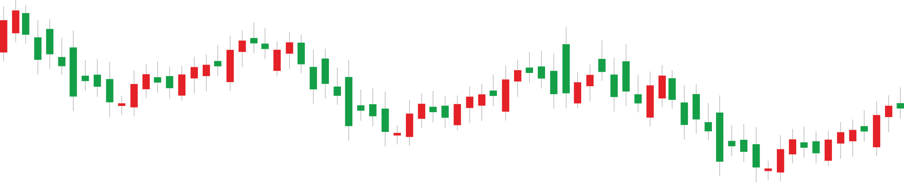

Dünya altın piyasasında bir insanın asla yetişemeyeceği hızda alım-satım yapan zeki bir yazılım. Piyasadaki karmaşayı değil, saniyelik fırsatları kazanca dönüştürüyor.
Geleceği görmez; ancak 1 saniyede 100 puanlık bir sıçrama olduğunda, bu hareketin devam edeceğini anlık olarak tespit eder ve işleme girer.
Binlerce veriyi saniyeler içinde süzerek sadece kazanma ihtimali en yüksek anları seçer (Faiz oranı kararları, tarım dışı istihdam, enflasyon verileri gibi önemli gelişmeleri takip eder).
Dalga henüz başındayken vakit kaybetmeden işlemi başlatır ve kârı alıp çıkar.
İnsan beyninin bir hareketi algılayıp tepki vermesi yaklaşık 250 milisaniye sürerken, robotumuz bu süreci 1 milisaniyenin altında tamamlar; yani siz daha ne olduğunu anlamadan o işlemi bitirmiş olur.
Haber anındaki sert sıçramalarda fiyatlar çok hızlı değişir; robot, hedef fiyatı ekranda gördüğü an yüksek bir hızla emir ileterek en avantajlı noktadan giriş yapar.
Veri merkezlerine doğrudan bağlı altyapısı sayesinde, piyasa onayı ile işlem girişi arasında hiçbir gecikme yaşanmaz; bu da stratejinin başarısını garanti altına alır.
Robot korkmaz, heyecanlanmaz ve hırsa kapılmaz; piyasa ne kadar kaotik olursa olsun, sadece önceden tanımlanmış matematiksel modele %100 sadık kalır.
İnsan yorulur, uyur ve dikkati dağılır; ancak bu sistem, piyasa açık olduğu her saniye aynı yüksek konsantrasyonla binlerce veriyi analiz etmeye devam eder.
Sistem, piyasada oluşabilecek "belki döner" veya "biraz daha bekleyelim" gibi insani yanılgılara düşmeden, kural neyse onu hiç tereddüt etmeden hatasız uygular.
Robot, saniyeler içinde gerçekleşen sert fiyat hareketlerini yakalar. Manuel bir insanın yapamayacağı kadar hassas bir zamanlama ile çalışır.
Sadece 1 saniyede 100 puanı aşan sert ve kararlı hareketleri işleme değer bulur; yavaş ve zayıf kıpırdanmaları "belirsizlik" olarak görüp devre dışı bırakır.
Haber akışı ve hareketlilik (volatilite) eşzamanlı olarak desteklenmiyorsa, fiyat ne kadar sıçrarsa sıçrasın "tuzak" ihtimaline karşı kenarda beklemeyi tercih eder.
İşleme girme kararını verdiği kadar, "girmeme" kararını da milisaniyeler içinde verir; bu sayede hatalı işlemlerden kaçınarak sermaye verimliliğini korur.
Dünyanın en likit varlıklarından biri olduğu için, anlık olarak çok büyük miktarlarda alım-satım yapılmasına imkan tanır; bu da hızlı giriş-çıkış stratejimiz için kusursuzdur.
Altın piyasası, haber akışlarına ve ekonomik verilere en hızlı tepki veren piyasadır; robotun kazanç üretmek için ihtiyaç duyduğu "dikey hareketler" en çok bu alanda oluşur.
İşlem hacminin yüksekliği sayesinde alış-satış farkı (spread) çok dardır; bu da robotun kâra geçme süresini kısaltan en önemli maliyet avantajıdır.
Hedeflenen fiyat görüldüğü milisaniye içinde emir iletilir; manuel işlemlerdeki "geç kalma" veya "fiyat kaçırma" riskleri bu sistemde tamamen ortadan kalkar.
New York ve Londra'daki veri merkezlerine doğrudan bağlı olması sayesinde, işlemler doğrudan piyasanın kalbine en yüksek hızla ulaştırılır.
Sinyal oluştuğu an girer, hedef kâr noktasına ulaştığı an saniyeler içinde kârı realize edip kenara çekilir; vaktini piyasada risk altında geçirmez.
Robot önce sermayeyi korur, sonra kazandırır. İşlem yaparken her zaman otomatik emniyet kurallarını uygular.
Piyasa ne kadar sert hareket ederse etsin, robot bir işlemde 150 puandan fazla zarar edilmesine asla izin vermez ve işlemi o noktada kesin olarak kapatır.
Beklenmedik piyasa şoklarında veya sert düşüşlerde, bakiyenizin büyük bir kısmını kaybetme riskini tamamen ortadan kaldıran bir emniyet sibobudur.
İnsanların "belki döner" diyerek yaptığı bekleyiş hatasına robot asla düşmez; kural neyse vakit kaybetmeden onu uygular.
İşlem 100 puan kâra ulaştığı an, robot koruma sistemini otomatik olarak aktif eder ve o işlemdeki zarar olasılığını tamamen sıfırlar.
Fiyat kâr yönünde ilerlemeye devam ettikçe, robot koruma seviyesini de fiyatın peşinden yukarı taşır; böylece kârı sürekli güncelleyerek kilitler.
Piyasa aniden tersine dönerse, robot önceden kilitlediği en yüksek kâr noktasında işlemi kapatarak kazancın kasada kalmasını sağlar.
10.000$ bakiyeli bir hesapta sadece 0.10 lot gibi çok küçük işlemler açarak risk en başından minimize edilir.
İşlem anında 10.000$'lık kasanın sadece 1.000$'ı kullanılır; yani bakiye hiçbir zaman tehlikeye atılmaz.
Maksimum 150 puanlık zarar kesme kuralıyla, bir işlemdeki riskiniz ana paranızın sadece %0.15'i (15$) kadardır.
Robot, dünyanın en büyük bankalarıyla aynı kaynaktan beslenir. Bu sayede en uygun fiyatlarla ve hızla işlem yapar.
Yerel aracılar yerine doğrudan küresel likidite havuzlarına bağlıdır; bu sayede emirler hiçbir gecikme olmadan doğrudan piyasa merkezine ulaşır.
Doğrudan bağlantı sayesinde alış-satış farkı (spread) minimum seviyeye iner; bu da işlemlerin kâra geçme süresini önemli ölçüde kısaltır.
Büyük hacimli işlemleri bile fiyatı kaydırmadan (slippage olmadan) milisaniyeler içinde gerçekleştirebilen profesyonel bir altyapıya sahiptir.
Dünya ticaretinin kalbi olan Equinix NY4 (New York) ve LD5 (Londra) merkezlerinde barınır; piyasa verilerine kaynağından ulaşır.
Fiyat sağlayıcılar ile aynı binada (co-location) bulunması sayesinde, emir iletim hızı 1 milisaniyenin altındaki teknik sınırları zorlar.
Saniyede on binlerce fiyat verisini işleyebilen yüksek bant genişliği sayesinde, en yoğun piyasa anlarında bile takılma ve donma yaşamaz.
Olağanüstü veri kesintilerinde veya teknik aksaklıklarda, robot tüm pozisyonları anında güvenli konuma alan otomatik koruma anahtarına sahiptir.
Yedekli enerji (UPS) ve yedekli internet hatları (Failover) sayesinde, sistem dünya genelindeki teknik arızalardan etkilenmeden çalışmaya devam eder.
Sistemin sağlığı ve bağlantı kalitesi yazılımsal olarak her saniye denetlenir; en küçük bir riskte robot otomatik olarak savunma moduna geçer.
Robot, rastgele değil, matematiksel bir plana dayanan haftalık kazanç hedefi ile çalışır.
Robot haftada ortalama 15-20 arası işlem açar; bu sayı, yüzlerce aday arasından en sıkı filtreleri geçen "en kaliteli" fırsatların süzülmesiyle oluşur.
Piyasanın aşırı dalgalı, belirsiz veya maliyetli (yüksek spread) olduğu anlarda robot sabırla bekler; sadece en net sinyallerde harekete geçer.
İşlem başına değil, haftalık genel toplama odaklanan ve rastgele işlemlerden kaçınan bir başarı stratejisi izler.
Haftalık %6 net kâr hedefi, rastgele bir rakam değil, uzun vadeli istatistiksel modellerin sunduğu gerçekçi bir başarı projeksiyonudur.
Kazancınız dolar bazlı olduğu için, hem sermayenizin global değerini korur hem de yerel piyasa risklerinden bağımsız bir büyüme sağlar.
Düzenli haftalık kazançlar, uzun vadede sermayenizin katlanarak artmasını sağlayan güçlü bir finansal motor işlevi görür.
Robot, piyasada uzun süre kalmak yerine, hedeflenen kârı saniyeler içinde alıp riskli alandan uzaklaşmayı ve kasayı korumayı hedefler.
İşlemler çok kısa sürelidir; böylece sermaye piyasa risklerine minimum sürede maruz kalır ve gecelik risklere girilmez.
Sadece en likit ve hareketli olan altın piyasasına odaklanarak, her gün taze fırsatlarla nakit akışını canlı tutar.
Global piyasaların gücünü arkanıza alın. Enflasyona karşı en güçlü kalkanı kuşanın ve alım gücünüzü yaşadığınız coğrafyada katlayın.
Sermayeniz dünyanın en geçerli para biriminde büyürken, birikimlerinizin alım gücü her gün korunur.
Sadece yerel piyasalara bağlı kalmadan, tüm dünyanın yatırım yaptığı bir havuzdan pay alırsınız Gorduğunuz coğrafyadan bağımsızlaşın.
Dolar bazlı haftalık %6 kâr, yerel kur farkıyla birleştiğinde yerel yaşam maliyetleri karşısında çok daha yüksek bir refah seviyesi sunar.
Dünya piyasasındaki hızı ve teknolojiyi kullanarak, kazancınızı kendi hayatınıza en verimli şekilde aktarırsınız.
Siz uyurken, tatildeyken veya sevdiklerinizle vakit geçirirken robot piyasayı süzmeye devam eder.
Dolar kazanıp TL harcayarak, finansal hedeflerinize manuel bir çalışandan kat kat daha hızlı ulaşırsınız.
